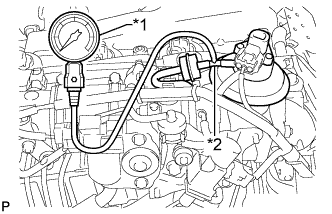
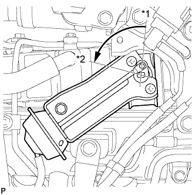

КЛАПАН РОГ (для моделей без DPF) > ПРОВЕРКА БЕЗ СНЯТИЯ С АВТОМОБИЛЯ |
| 1. ПРОВЕРЬТЕ ЭЛЕКТРИЧЕСКИЙ КЛАПАН УПРАВЛЕНИЯ РОГ В СБОРЕ |
|  |
С помощью тройника подсоедините датчик разрежения к шлангу между электрическим клапаном управления РОГ и E-VRV.
| *1 | Датчик разрежения |
| *2 | Тройник |
Проверьте притирку электрического клапана управления РОГ.
Запустите двигатель. Убедитесь, что двигатель запускается, а затем работает на холостом ходу.
Проверьте разрежение на выходе с помощью датчика разрежения.
Подсоедините датчик разрежения к выходному патрубку электрического клапана управления РОГ.
Прогрейте двигатель и удостоверьтесь, что показание датчика разрежения превышает 28 кПа (210 мм рт.ст., 8,23 дюйма рт.ст.).
Если результат не соответствует заданному, проверьте, нет ли утечек между электрическим клапаном управления РОГ и вакуумным насосом, а также проверьте электрический клапан управления РОГ.
Проверьте работу прогретого двигателя.
Визуально проверьте на наличие утечек вакуумный шланг между вакуумным насосом и электрическим клапаном управления РОГ.
Прогрейте двигатель.
Значение температуры охлаждающей жидкости должно находиться в пределах 75–90°C (167–194°F).
Убедитесь, что показания датчика разрежения возрастают более чем на 28 кПа (210 мм рт.ст., 8,23 дюйма рт.ст.) при 1500 об/мин.
Резко до упора нажав педаль акселератора, убедитесь, что показания датчика разрежения немедленно падают.
Поддерживайте частоту вращения коленчатого вала двигателя выше 4000 об/мин.
Убедитесь, что показания датчика разрежения соответствуют приведенным ниже.
Отпустив педаль акселератора, убедитесь, что показания датчика разрежения мгновенно падают, в то время как частота вращения коленчатого вала двигателя снижается с 4000 об/мин до холостого хода.
Если результат не отвечает требованиям, обратитесь к разделу с описанием проверки (Нажмите здесь).
Снимите датчик разрежения и подсоедините вакуумный шланг к электрическому клапану управления РОГ.
| 2. ПРОВЕРЬТЕ КЛАПАН РОГ № 2 В СБОРЕ (для моделей с охладителем РОГ) |
|  |
Убедитесь, что когда двигатель остановлен, регулирующая тяга перепускного канала охладителя РОГ находится в положении без перепуска, как показано на рисунке.
| *1 | Положение без перепуска |
| *2 | Положение перепуска |
Запустите двигатель.
Когда холостой ход двигателя стабилизируется, и температура охлаждающей жидкости будет ниже 70°C (158°F), удостоверьтесь, что регулирующая тяга перепускного канала охладителя РОГ находится в положении перепуска, как показано на рисунке.
Убедитесь, что при температуре охлаждающей жидкости двигателя 75°C (167°F) или выше приводная тяга перепускного клапана охладителя РОГ находится в положении без перепуска, как показано на рисунке.